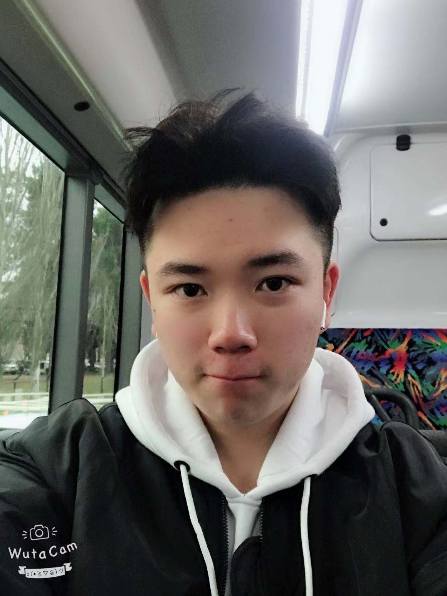

人员介绍
创始人

李梦 澳大利亚diamondream创始人，致力于慈善事业
主席

曹晟文15岁来澳洲，就读中学。
毕业于UC双学士学位。
任Lake Ginninderra College高中教师。
秘书长

刘一泽，20岁，来自于河南郑州。
高中毕业于Lake Ginninderra College。
现在就读于澳大利亚堪培拉大学工程管理专业。
我乐观开朗，面对生活积极向上
副秘书长

王爱雯 来自河北唐山，现就读于ANU的Master of computing专业， 是一个每天struggling于coding的前商科学姐

师园松来自天津市。现在就读于堪培拉大学，专业是bachelor of IT。阳光外向乐于助人。

堪培拉大学 culture and heritage 艺术专业 19岁。

王奥茹，19岁，来自黑龙江哈尔滨，现就读于堪培拉大学工程管理专业。

何非，来自浙江衢州，就读于堪培拉大学architecture专业，乐于助人，擅长唱歌

Tony Tu 来自江苏,现就读于UNSW civi engineering,高中Camberra College。